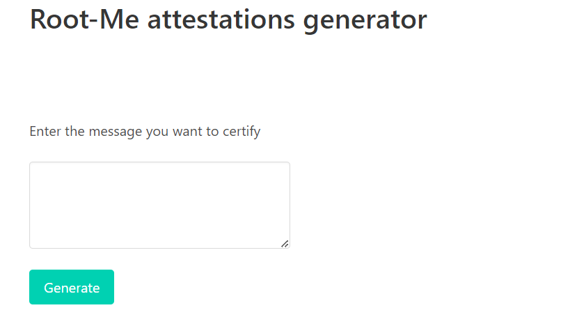
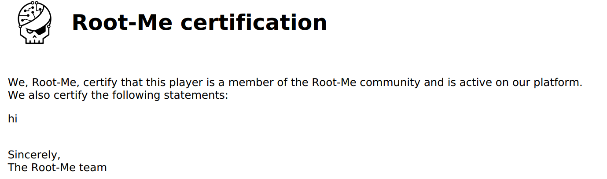
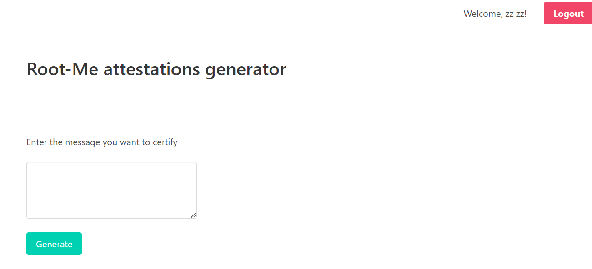
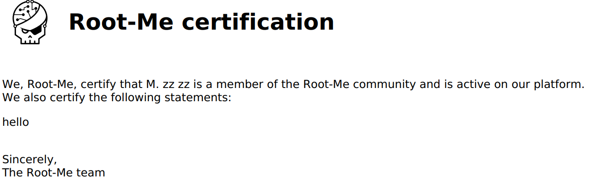
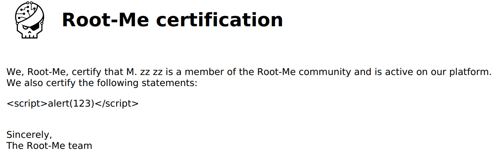
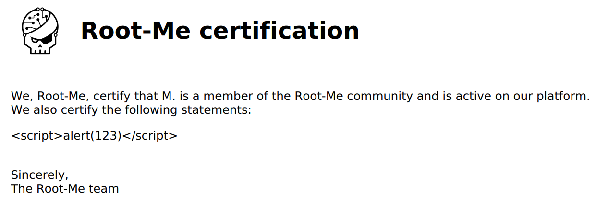
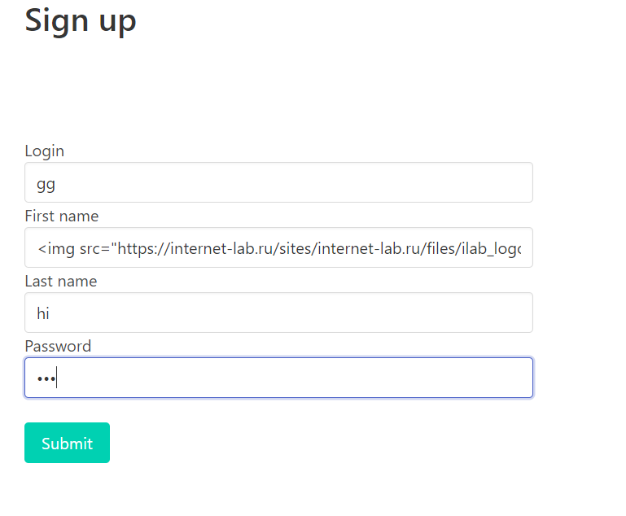
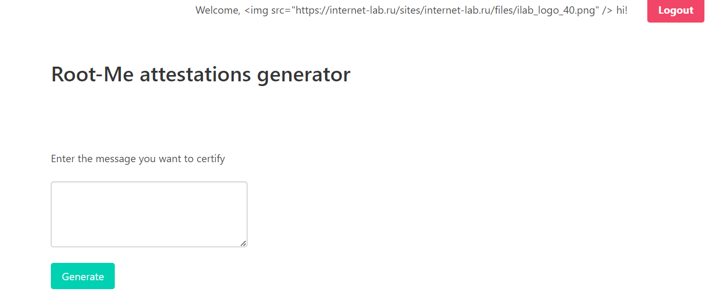
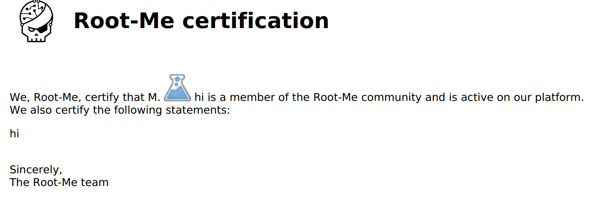
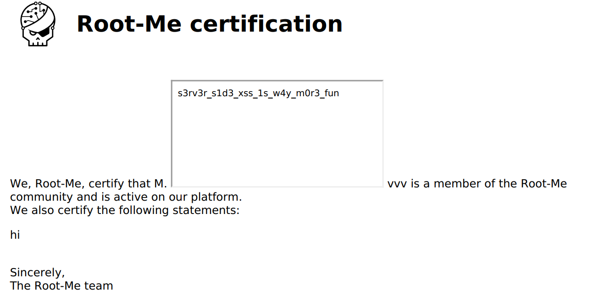

[WRITE - UP]
Challenge này XSS xảy ra ở phía sever, đầu tiên có 1 form input để gửi dữ liệu về phía server

Khi mình nhập thử thì web tạo ra cho chúng ta 1 file PDF, trong đó có chứa dữ liệu mình nhập vào

Có thể thấy mình có thể chèn một số loại tập lệnh thay vì văn bản, sau đó máy chủ tạo PDF động sẽ hoạt động như một máy khách và thực thi tập lệnh của mình. Điều này sẽ dẫn đến XSS ở phía máy chủ. Vậy ta có thể attack XSS tại đây
Ngoài form input, web còn 2 form login và sign up, và khi mình thử đăng kí và đăng nhập thì trang hiển thị như sau

Và khi mình nhập hello server tạo cho mình 1 file PDF nhưng file lần này có vẻ khác hơn file lúc trước, ngoài dữ liệu nhập vào, còn có một bản ghi như "M. zz zz". Họ và tên đã đăng kí cũng xuất hiện trong file PDF, lại thêm 2 điểm có thể khai thác XSS

Tiến hành khai thác thôi, vẫn sử dụng payload cơ bản vào form input

Sau khi thử cả form input, login, signup vẫn không thấy dấu hiệu gì, nhưng khi tải xuống file PDF mình đã thấy sự khác biệt

Ta có thể thấy họ và tên mình vừa đăng kí không hiển thị trong file PDF này, chứng tỏ payload đã thực thi khi mình đăng kí
Không chỉ vậy, ta có thể đăng kí với 1 bức ảnh được lấy từ trang web khác


Giờ mình thử tạo lại file PDF xem có gì khác biệt không, và......

Và có thể thấy hình ảnh được thực thi trong trường First Name, và đây cũng chính là lỗ hỏng XSS phía server khi không kiểm tra đầu vào, lọc đầu vào không an toàn. Qua đó cho phép người dùng thực thi bất kì câu lệnh nào
Sau khi khai thác được lỗ hỏng này, mình sử dụng payload sau để trỏ đến các tệp cục bộ ở phía server, challenge cũng đã gợi ý flag nằm ở /flag.txt

Flag: s3rv3r_s1d3_xss_1s_w4y_m0r3_fun